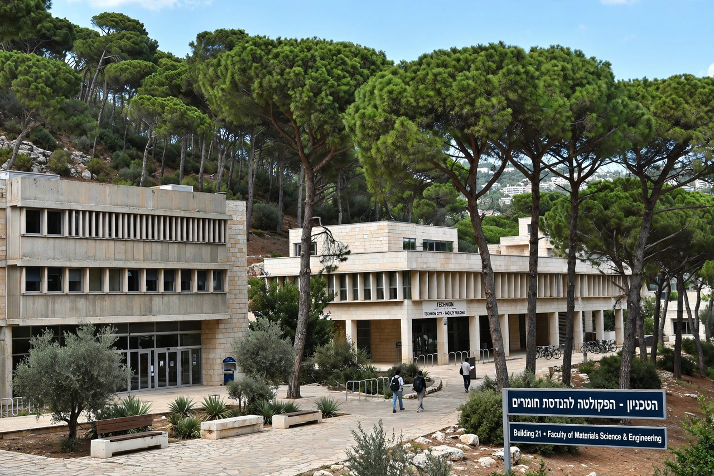

Technion
From Wikipedia, the free encyclopedia

The Technion – Israel Institute of Technology is a public research university in Haifa, Israel, founded in 1912 (opened 1924) as the first Hebrew technical institution. Israel's oldest university and its MIT analogue, it is consistently ranked among the world's top technology universities, counts four Nobel laureates among its faculty, and is credited as an engine of Israel's high-tech economy — its graduates founding or leading a large share of Israeli tech firms.
History
Founded under Ottoman rule by German-Jewish philanthropists, the Technion's 'War of the Languages' (1913) — whether to teach in German or Hebrew — was a founding skirmish of Hebrew revival, won by Hebrew. Albert Einstein chaired its first support society and planted a palm in its yard (1923). Through statehood it educated Israel's engineers for defence, water, construction and, later, computing.
Today
Some 14,000 students across 18 faculties on the Mount Carmel campus study engineering, computer science, medicine and architecture; international campuses (with Cornell on New York's Roosevelt Island — Cornell Tech; the Guangdong Technion in China) extend its model. Its Nobel laureates in chemistry (Shechtman, for quasicrystals, 2011; Hershko and Ciechanover for ubiquitin, 2004) anchor its research reputation.